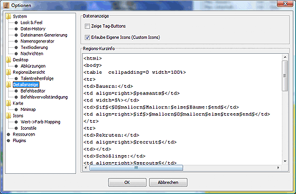
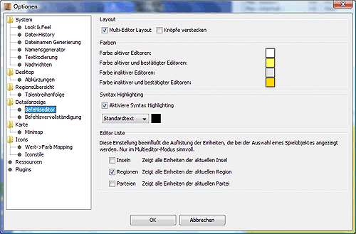
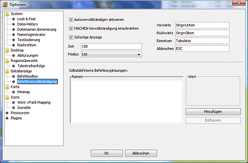

Detailanzeige
In diesem Dialog können die Optionen der Detailanzeige und der Befehlsergänzung konfiguriert werden:

Datenanzeige
- Gegenstände in der Parteizusammenfassung gruppieren
Ist diese Option aktiviert, werden die Gegenstände in der Regionsparteistatistik nach Waffen, Rüstungen, Ressourcen, Luxusgüter, Kräuter usw. gruppiert.
- Zeige Tag-Buttons
Ist diese Option aktiviert werden in der Detailanzeige zwei Schaltflächen zum Hinzufügen und Enfernen von zusätzlichen CR-tags angezeigt, die man dann z.B. mit Vorlage auswerten kann.
Region-Kurzinfo
In diesem Feld können die Regionsinhalte bestimmt werden, die permanent in dem grauen Bereich oberhalb der Detailanzeige eingeblendet werden.
Befehlseditor

- Multi-Editor Layout
Wird diese Option aktiviert, stehen die Befehle aller Einheiten der Region untereinander im Befehlsfenster.
Ist das Multi-Editor Layout deaktiviert, stehen nur die Befehle der gerade gewählten Einheit im Befehlsfenster.
- Farben
Der Hintergrund der Befehlsbox kann dabei für die aktive Einheit anders eingefärbt werden als für die übrigen Einheiten. Dazu klickt man einfach auf das jeweilige Farbfeld.
- Syntaxhighlighting
Hier kann man das Syntaxhighlighting (syntaxabhängige Färbung der Befehle) aktivieren und die Farben einstellen.
- Editor-Liste
Die Einstellungen beeinflussen die Menge der dargestellten Einheiten im der Befehlsliste. Einschränken lässt sich diese Menge der dargestellten Einheiten auf Inseln, Regionen und Parteien.
Befehlsvervollständigung

Die automatische Befehlsvervollständigung erleichtert das Eingeben von Befehlen für die Einheiten. Dabei werden je nach Kontext sinnvolle bzw. mögliche Befehle vorgeschlagen und können mit wenigen Tastendrücken oder Klicks ausgewählt werden.
Beispiel:
Man tippt ein "G". Nun werden alle Befehle, die mit "G" beginnen zur Auswahl angezeigt. Nach Auswahl des Befehls "GIB" folgt hier eine Liste aller Einheiten in der Region. Nachdem so die Einheitennummer eingegeben wurde erscheint eine Liste mit allen Gegenständen, die die Einheit besitzt.
- Autovervollständigen aktivieren:
Hier kann man die automatisch Befehlsvervollständigung de- und aktivieren.
- MACHEN-Ergänzung einschränken:
Wenn diese Option gewählt ist, werden beim MACHEN-Befehl nur Gegenstände vorgeschlagen für die die notwendigen Ressourcen verfügbar sind.
- Sofortige Anzeige:
Aktiviert die sofortige Anzeige der Befehlvorschläge nach der Eingabe eines Befehls. Das bedeutet, daß der nächste Teilbefehl vorgeschlagen wird, bevor der Wortanfang getippt wurde. Ist diese Option deaktiviert, muß man vor dem Befehlsvorschlag min. 1 Zeichen tippen.
- Zeit:
Im Feld Zeit kann man die Verzögerung für die Anzeige des Befehlsvorschlages in ms einstellen.
- Modus:
Für die Autovervollständigung stehen zwei Modi zur Verfügung:
- Liste
Sobald ein oder mehrere Zeichen eingegeben wurden, erscheint eine Liste mit möglichen Ergänzungen. Jede weitere Eingabe von Zeichen schränkt die Auswahl weiter ein.
Beispiel:
L -> "LEHREN, LERNEN, LIEFERE"
LE -> "LEHREN, LERNEN"
LEH -> "LEHREN"
Man kann in der Liste mittels der Cursortasten nach oben und unten wandern. Ein Druck auf die TAB-Taste oder ein Doppelklick auf den Eintrag vervollständigt den Befehl.
- Markierter Text
Statt der Auswahlliste wird das Wort bis zur nächsten Unterscheidungsmöglichkeit vervollständigt. Der eingefügte Text ist markiert und wird so beim weitertippen überschrieben. Den Vorschlag übernimmt man auch hier mit der TAB-Taste.
- Keine Anzeige
Schaltet die Anzeige der Vorschläge ab. Das Einfügen der (unsichtbaren) Vorschläge ist dennoch möglich.
- Bei den Eingabefeldern für Vorwärts, Rückwärts, Einsetzen und Abbrechen kann man die Tastenkombinationen für die jeweiligen Funktionen einstellen. Vorwärts springt einen Vorschlag vor, Rückwärts springt einen Vorschlag zurück, Einsetzen setzt den aktuellen Vorschlag ein und mit Abbrechen wird die Eingabe abgebrochen.
- Selbstdefinierte Befehlsergänzungen
Im unteren Bereich des Fensters hat man die Möglichkeit, selbst beliebige Kürzel zu definieren, die dann bei den Befehlsergänzungen vor den normalen Befehlen angezeigt werden. Hat man z.B. das Kürzel lh für lernen Hiebwaffen definiert, so wird das analog dem obigen Beispiel folgendermaßen angezeigt:
L -> "lh, LEHREN, LERNEN, LIEFERE"
LE -> "LEHREN, LERNEN"
Wählt man während der Befehlserstellung das Kürzel aus, so wird der definierte Textbaustein anstatt des Kürzels eingesetzt. Dieser Baustein kann auch länger als eine Zeile sein.
Im linken Teil der Anzeige befindet sich eine Liste der bisher definierten Kürzel. Wählt man eines der Kürzel mit der Maus aus, so wird im rechten Teil der Anzeige der dazugehörige Textbaustein angezeigt. Mittels der Schaltfläche Hinzufügen lassen sich neue Kürzel definieren, während die Schaltfläche Entfernen das gerade ausgewählte Kürzel aus der Liste löscht.